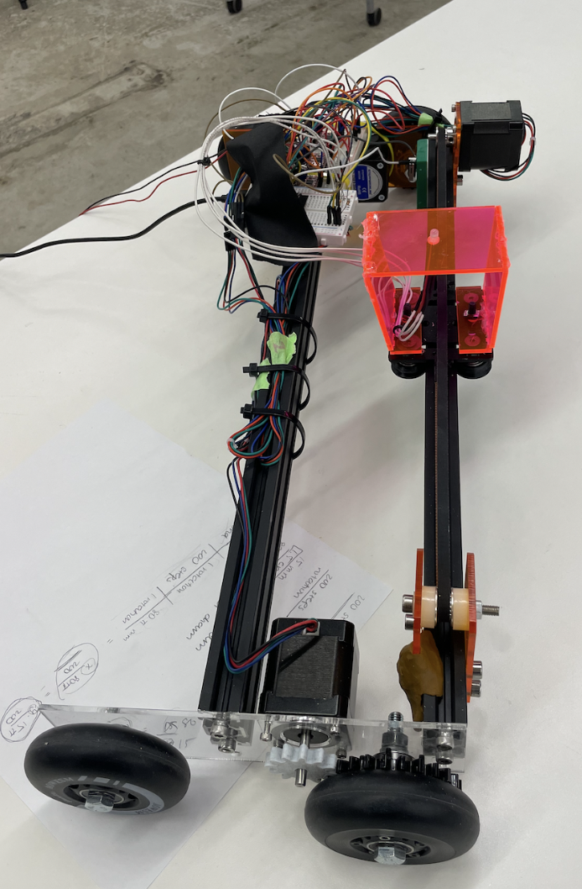
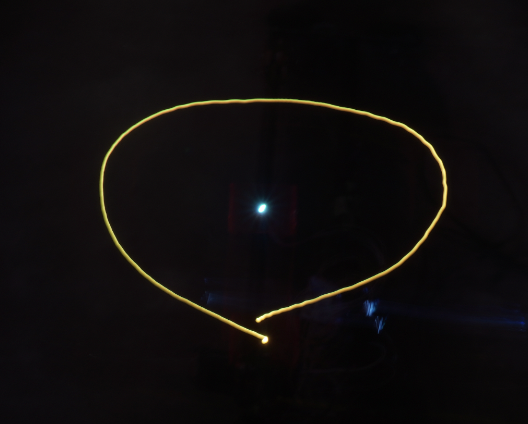
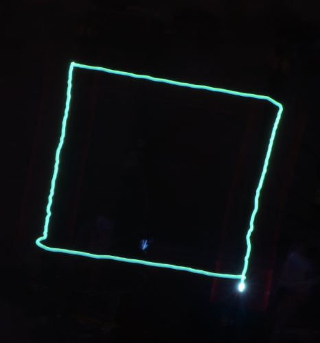

Week 10 & 11: Machine Building & End Effectors - Robot
Documentation for this week was group sourced, as our group worked on building and programming the robot together. I worked on the manual assembly at first, laser cutting some of the pieces and screwing everything
together, and in the process learning useful new skills such as threading the metal extrusion (which I found quite satisfying). After the body of the robot was complete, I helped work on the circuitry and the coding. It took a lot of
troubleshooting, debugging, and testing the robot in person before we finally achieved our (somewhat) circular and square shapes. The experience was a very rewarding first foray into the process of machine building from
start to finish, and I learned a lot about planning, manual assembly, wiring, coding, and troubleshooting that will be very helpful for my final project.
The following is our group-sourced documentation.
General Motivation
To build a “light-painting” robot (with motor position calibration and homing) capable of drawing a circle (with centerpoint) and a square with an LED light such that the final image can be captured by long-exposure photography.

Manual Construction
To create the robot, we took inspiration from the example given in class. We used the provided Fusion360 files to cut the side pieces and the motor backing pieces out of acrylic. We cut two pieces of metal extrusion by hand with a saw, and threaded each of them so they would be capable of holding screws.
Next, we assembled the pieces. We screwed the wheels through the side acrylic pieces and into each metal extrusion (2 wheels on each side). It was important to put washers in between the wheel and the acrylic to better space them out and allow for smoother rolling. We slid small screw-receiving pieces into the gutters of each metal extrusion so that we would be able to screw the motor-backing acrylic faces to the side of the metal extrusion. Then we screwed the motors into place. Lastly, we attached the belt and the moving plate. It took a good amount of work to force the wheels of the moving plate into the metal extrusion’s gutter such that they fit tightly enough but without so much friction that it couldn’t roll smoothly. Another issue we found was that the axle of the belt was too wide (ie. the gap between the two acrylic pieces was too large), meaning that the belt would slip from side to side as it spun. We wanted it to be held more securely in place (less lateral slippage), so we had to squeeze multiple rubber washers onto this axle to minimize the gap.
After the circuits were completed, we secured the breadboards to the metal extrusion with zip ties. We also secured groups of wires to the metal extrusion to minimize the chances of wires getting caught in the wheels as the robot moves around.
To build the end effector, we designed and laser-cut a rectangular acrylic stand that was screwed to the moving plate. We drilled a hole through the top face of this stand, through which the LED light bulb was threaded.
Notes: The process of building this robot involved a good amount of trial and error. An important takeaway was that the sequence of events in terms of putting pieces together matters a lot, as sometimes we would assemble something but realize that we had to take a lot of it apart in order to add another crucial feature. For example, it would have saved a lot of time to slide the screw-receiving pieces as well as the moving plate wheels into the gutters of the metal extrusion before we attached the side acrylic pieces and the wheels (since it was impossible to fit those items into the gutter when the wheels were in place).
Wiring
3 stepper motors were neatly mounted to the laser-cut acrylic pieces on the plotter frame. Their lengthy wire connections leading to the motor drivers were ultimately zip tied to the aluminum extrusion.
A4988 Motor Driver: We wired three motor drivers on one breadboard to the ESP32-C3 on another breadboard. The preliminary code written to simply test the simultaneous running of three motors failed. After some debugging it turned out the motor drivers were fried or otherwise defective. Replacing them with fresh chips solved it.
LED: The RGB LED was connected on the same breadboard as the ESP32. Its wires were long enough to reach the furthest points of the belt (our “Y” axis) while fixed to the ESP32 breadboard, which was ziptied, along with the motor driver breadboard, to the other aluminum protrusion. The RGB was initially inserted into a hole of the moving platform attached to the belt. We later laser cut acrylic housing for it, which kept it stable and better articulated the light to be captured by camera.
Limit Sensor: For zeroing the Y-axis, belt-powered platform we attached a limit sensor to its own breadboard, which was small enough to adhere to the Y-axis stepper motor. Contact would be made when the platform moved close enough to the motor. This position was calibrated as 0. This breadboard was wired to the ESP32.
Due to the many fragile connections between components on several breadboards, and with the additional disruption of Y- and X-axis motion, essential contacts were often lost. This could be solved in future iterations by soldering connections and implementing a more integrated mounting system for the boards, as well as for the power source.
Coding
AccelStepper: For controlling the stepper motors we relied on the AccelStepper class. The AccelStepper documentation did not clearly explain the differences between its various similarly named functions. We came to understand them via experimentation and trial and error.
MultiStepper: We had initially planned to use the MultiStepper class to manage simultaneous commands to the three motors. The motors often remained unresponsive while using this class and the convenience of the class was not great enough to warrant debugging. We ditched it.
The main two tasks our plotter could perform (draw a circle, draw a square) were accomplished by sending a series of destinations (relative to the limit sensor calibration, and the gear ratio of the wheels), to all three motors. For the circle we additionally modified the acceleration and speed for each destination to better accomplish the necessary curves. (For example, for the circle we divided the robot’s motion into 4 segments. In the first segment, the x axis wheels should be moving forward and decelerating while the y axis plate should be moving to the right and accelerating. In the second segment, the x axis wheels should be moving backward and accelerating while the y axis plate should continue moving to the right, but decelerate. In the third segment the x axis wheels should continue moving backward but decelerate, while the y axis plate should start moving to the left and accelerate. In the fourth and final segment, the x axis wheels should start moving forward and accelerate, while the y axis plate should keep moving to the left but decelerate.) The RGB commands could have been included in this list and should be in future iterations for more complex drawings that incorporate unconnected sections. For now the RGB is simply turned on or off when necessary, between motor commands.
moveTo() & run()
setSpeed() & runSpeed()
runToPosition() blocks
Future Steps
Better wire management and board integration. Soldered connections.
Unified command set for destination, acceleration, and RGB.
Script for converting vector drawings (of specified parameters, i.e., max-width (of canvas) = w, line-width = d, etc.) to command sets for the plotter.
Results & Videos
Circle

Square

Here is a video of one of our later runs -- at this point, we got the light to properly move to 4 different points around the circle, but the acceleration was not right, and it was also drawing more of an ellipse than a circle.
Here is our final run - at this point, the acceleration was a lot smoother and the circle is significantly more round rather than oval. It was this run that produced the circle image shown above.